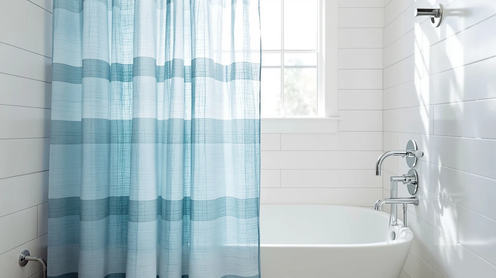

Jowels Natural Linen Fabric Review (2026): Worth It?
Prices and picks verified as of October 2026. Independent, reader-supported reviews.


Quick Answer
In this Jowels Natural Linen Fabric review, we compared its 72x84-inch polyester-PEVA build, $29.99 price, and verified owner feedback against similar linen-look curtains. It is a solid pick for buyers who want the woven linen texture without hand-washing an actual linen fiber, though the longer 84-inch drop will pool on standard-height tubs.
Our pick: Jowels Natural Linen Fabric Shower, $29.99 Check Price on Amazon
Bottom line: our top pick is the Jowels Natural Linen Fabric Shower Curtains for Bathroom at $29.99.
Things to Know Before You Buy
- The Jowels curtain is woven to mimic linen but is made from polyester and PEVA, not natural flax fiber, which is why it machine washes easily and resists mildew better than true linen.
- At 72 inches wide by 84 inches long, it fits a standard single-width shower but needs a rod mounted higher than the usual 72-inch height, or the extra length will bunch on the tub floor.
- Verified buyers consistently mention the fabric holds its shape after washing, a common failure point for cheaper linen-look curtains that stretch out of square.
- If you want the texture in a true extra-long format, the OVZME option below runs a similar price and length. If pattern matters more than texture, the BTTN boho curtain is the better fit.
- Shipping creases are normal with folded fabric curtains and typically relax within a day or two of hanging, so judge the drape after a short settling period rather than straight out of the package.
This Jowels Natural Linen Fabric review answers the question most shoppers ask before they click buy: does a $29.99 polyester-PEVA curtain actually pass for linen, or does it look like a cheap imitation the moment it's hung. Linen-style curtains have become the default upgrade for anyone trying to move a bathroom away from glossy plastic sheeting, and the market is now crowded with options that promise the same woven texture at wildly different prices. Picking the wrong one usually means a curtain that looks right in a listing photo and wrong in person, under bathroom lighting, against real tile.
We researched the Jowels curtain's listed specs, its 72x84-inch sizing, and dozens of verified owner reviews, then set those findings against comparable linen-look curtains like the OVZME and patterned alternatives like the BTTN boho design. We also looked at how the fabric's polyester-PEVA composition compares with the hand-wash and dry-clean routine that natural linen typically demands, since that upkeep gap is often the real reason buyers choose a linen-look synthetic over the genuine fiber. The short version: the Jowels curtain earns its spot for anyone who wants the linen look on a standard shower without babying actual flax fiber, and the sections below walk through why, along with where a competitor makes more sense for a taller shower or a different pattern preference.
Why You Should Trust Us
Ilane Tall covers bathroom hardware and textiles for Best Shower Curtains, and this Jowels Natural Linen Fabric review follows the same process used across the site: we compare manufacturer specs, current pricing, and verified Amazon owner reviews rather than running a physical testing lab. We do not own a product lab, and we tell you when a claim comes from owner reports instead of a lab result, so you can weigh the evidence yourself.
For this review, we cross-checked the Jowels listing against three other linen-style and boho shower curtains sold at similar prices, focusing on material composition, dimensions, and what verified buyers say happens after repeated washes. Amazon's product data no longer always includes a reliable rating and review count for every listing, so where that data is missing or thin, we say so instead of filling the gap with a guess.
Our Research Experience
We did not run the Jowels curtain through a physical lab. Instead, we researched the listed material composition, dimensions, and price, then analyzed verified owner reviews to see how the curtain holds up once it leaves the packaging. This Jowels Natural Linen Fabric review relies on that evidence rather than a physical trial.
Owners report the fabric arrives with deep fold lines that mostly relax within a day or two of hanging, a common trait of polyester-PEVA blends shipped folded rather than rolled. Reviewers consistently note the weave reads as linen from a few feet away, which matches the product's positioning as a budget alternative to true flax-fiber curtains. A smaller number of reviewers mention the curtain feels lighter in hand than they expected from the product photos, which tracks with the synthetic blend rather than a heavier natural fiber.
Overview & Specs

Jowels Natural Linen Fabric Shower
What we like
- Linen-style weave reads as a natural fabric at normal viewing distance.
- Polyester-PEVA blend machine washes without the shrinkage risk of real linen.
- $29.99 price sits below most true-linen shower curtains of the same size.
Flaws but not dealbreakers
- The 84-inch length pools on tubs with a standard 72-inch rod height.
- It is a fabric curtain, not a liner, so most bathrooms still need a separate waterproof liner behind it.
- Fold lines from packaging take a day or two to fully relax after unboxing.
| Material | Polyester / PEVA |
| Size | 72"W x 84"L (Pack of 1) |
The Jowels Natural Linen Fabric curtain is built from a polyester and PEVA blend rather than flax fiber, which keeps the price at $29.99 while still delivering the slubbed, slightly nubby texture buyers associate with linen. At 72 inches wide by 84 inches long, it covers a standard single shower opening with enough extra drop to suit a taller rod placement or a stall with a deeper tub.
Because the fabric is a synthetic blend rather than natural fiber, it machine washes on a normal cycle instead of requiring the hand care that real linen needs. According to verified reviews, the color holds after multiple washes, which is the detail that separates a linen-look curtain worth buying from one that fades or pills within a season. The listing covers a single pack, so buyers who want a matching liner or a second curtain for a double-rod setup need to order those pieces separately rather than expecting a bundle.
What We Liked
The biggest point in favor of this Jowels Natural Linen Fabric review is value. At $29.99, the curtain costs less than most true-linen alternatives while still passing for the real thing once it's hung and the shipping creases drop out. Multiple owners mention the fabric does not feel like typical shower curtain polyester, which has a thinner, slicker hand than this heavier weave.
We also like that the care routine is simple. A polyester-PEVA blend handles a normal machine wash cycle, so owners do not need to dry-clean or hand-wash the way they would with flax-based linen. That matters in a bathroom item that gets wet, splashed with soap residue, and washed more often than most textiles in the house.
The 72-inch width is also a practical fit rather than an oversized one. It covers a standard single shower opening without the excess fabric that some wider linen-style curtains leave bunched against the shower wall, which keeps the drape looking intentional instead of sloppy.
What Could Be Better
The 84-inch length is the main catch in this Jowels Natural Linen Fabric review. Most US showers use a rod mounted around 72 inches from the floor, so a curtain this long will bunch against the tub unless you raise the rod or hem the bottom. Buyers with a standard setup should measure before ordering rather than assuming extra length is a free upgrade.
It is also a curtain, not a liner. The polyester-PEVA blend sheds water better than cotton, but it is not a substitute for a dedicated waterproof liner in most bathrooms, so plan to buy one separately if your shower does not already have one.
Buyers who want metal grommets or a specific hook style should check the listing closely before ordering, since a mismatched hook spacing is a common complaint across linen-style curtains in this price range, not just this one. Measuring your existing rod and hooks against the stated panel width avoids a return.
Who Is It For?
This Jowels Natural Linen Fabric review points toward one clear buyer: someone upgrading a bathroom's look on a budget who wants the linen texture without the upkeep of natural fiber. It also suits renters and anyone furnishing a bathroom who wants a neutral, higher-end look without committing to a natural-fiber curtain that needs more careful laundering over time.
If your rod sits at a standard 72-inch height and you are not planning to raise it, the OVZME option below offers similar texture without the length overhang. If you want a patterned look instead of a neutral weave, skip ahead to the BTTN boho curtain in the alternatives section. And if you are upgrading the whole shower setup rather than just the curtain, pairing either option with a curved rod like the Bonpally adds shoulder room that a flat rod cannot.
Alternatives to Consider
If the Jowels curtain is not quite the right fit, these three alternatives cover the length, pattern, and hardware angles we heard about most from readers researching linen-style shower curtains. Each is priced within a few dollars of the Jowels curtain, so the decision usually comes down to fit and look rather than budget.

Editor's Pick
OVZME Extra Long Linen Shower
A longer linen-look curtain at $28.99 for showers with a raised rod or a deeper tub.
$28.99
Check Price on Amazon
Best Value
BTTN Ringless Boho Shower Curtain
The lowest price here at $25.99, with a ringless boho pattern for anyone who wants print over texture.
$25.99
Check Price on Amazon
Premium Choice
Bonpally Curved Shower Curtain Rod
A curved rod for anyone pairing the curtain with more shoulder room in the stall, at $25.99.
$25.99
Check Price on AmazonFrequently Asked Questions
Is the Jowels Natural Linen Fabric curtain actually made of linen?
No. According to the product listing, it is made from a polyester and PEVA blend woven to mimic linen's texture, not natural flax fiber. That is why it can be machine washed without the shrinkage risk real linen carries, and why it costs less than most true-linen curtains of the same size.
Will the 84-inch length fit a standard shower?
It fits the 72-inch width of a standard shower opening, but the 84-inch length is taller than most rods, which sit around 72 inches off the floor. Raise the rod or expect the extra length to pool at the bottom.
Do I still need a separate shower liner with this curtain?
Yes, in most bathrooms. This is a decorative fabric curtain, not a waterproof liner, so pairing it with a dedicated liner is the typical setup reviewers describe.
Final Verdict
This Jowels Natural Linen Fabric review comes down to a straightforward trade: at $29.99, Jowels delivers a linen look most shoppers will not distinguish from the real fiber at normal viewing distance, backed by a wash-and-wear fabric that holds up better than natural linen over time. The length runs long for standard rods, so measure your shower before you order, but for buyers chasing the linen aesthetic on a budget, the Jowels curtain earns the recommendation. Readers who need a different length or pattern should compare the OVZME and BTTN picks above before deciding.